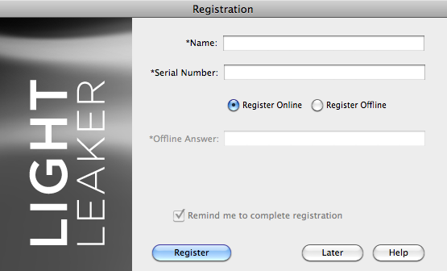

Let's Learn About Light Leaker
Registration and Activation
Once installed, Light Leaker must be activated order to launch properly. Whether you have an internet connection or work offline, we've made the process quick and easy.
The first time you launch the plug-in, it will launch directly into the Registration/Activation dialog which will need to be completed successfully prior to being able to work with the plug-in.

Online Registration and Activation:
Use the following instructions to register and activate the Light Leaker filter from a computer that is connected to the Internet:
- Launch Adobe Photoshop or other imaging application.
- Launch the Light Leaker Plug-in.
- Once the Registration dialog is presented, Enter your name.
- Locate and enter your Light Leaker Serial Number.
- Click the Register button.
- Upon successful registration, you will receive a message in green informing you that registration was successful. Additionally, all controls will become disabled and the Registration button will be replaced with a Close button.
- Click the Close button to exit the Registration dialog and launch the plug-in.
- If registration is unsuccessful, make a note of the error and contact Mister Retro Technical Support.
Note: If you cannot locate your Serial Number or are in a hurry, toggle Register Offline mode and click the Later button to use the plug-in for a few days unregistered. If too many days pass before the plug-in is registered and activated, the plug-in will no longer launch. Also, if you get stuck any time during the registration process, you may click the Help button to assist you in troubleshooting any registration problems.

Offline Registration and Activation:
Use the following instructions to register and activate the Light Leaker filter from a computer that is not connected to the Internet:
- Launch Adobe Photoshop or other imaging application.
- Launch the Light Leaker Plug-in.
- Once the Registration dialog is presented, Enter your name.
- Select the Register Offline option just below the Serial Number box.
- Enter the Offline Answer given to you by Mister Retro Technical Support.
- Click the Register button.
- Upon successful registration, your serial number will turn green and inform you registration was successful.
- Click the Close button to exit the Registration dialog and launch the plug-in.
- If registration is unsuccessful, make a note of the error and contact Mister Retro Technical Support.
Note: The Later button is only active if the user has selected the Register Offline option which allows you to continue using the plug-in for a few days unregistered. If too many days pass before the plug-in is registered and activated, the plug-in will no longer launch. Also, If you get stuck any time during the registration process, you may click the Help button to assist you in troubleshooting any registration problems.